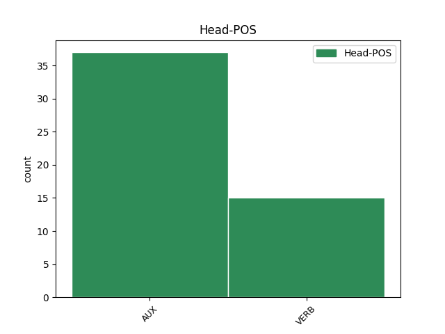
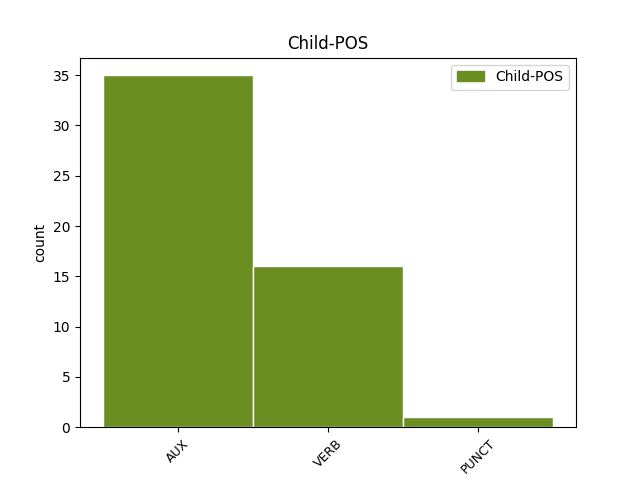

Distribution of features within this leaf



Agreement Rules sorted by frequency.
- When the dependent token is the predicative complements(comp:pred) of the head token, and the dependent token is AUX.
1 इस _ _ _ _ 0 _ _ _
2 मामले _ _ _ _ 0 _ _ _
3 में _ _ _ _ 0 _ _ _
4 क्या _ _ _ _ 0 _ _ _
5 कार्रवाई _ _ _ _ 0 _ _ _
6 होगी हो VERB VM Gender=Fem|Mood=Ind|Number=Sing|Person=3|Tense=Fut|VerbForm=Fin|Voice=Act 0 _ _ _
7 यह _ _ _ _ 0 _ _ _
8 बात _ _ _ _ 0 _ _ _
9 गुजरात _ _ _ _ 0 _ _ _
10 हाईकोर्ट _ _ _ _ 0 _ _ _
11 की _ _ _ _ 0 _ _ _
12 बृहस्पतिवार _ _ _ _ 0 _ _ _
13 को _ _ _ _ 0 _ _ _
14 होने _ _ _ _ 0 _ _ _
15 वाली _ _ _ _ 0 _ _ _
16 सुनवाई _ _ _ _ 0 _ _ _
17 के _ _ _ _ 0 _ _ _
18 बाद _ _ _ _ 0 _ _ _
19 ही _ _ _ _ 0 _ _ _
20 सामने _ _ _ _ 0 _ _ _
21 आ _ _ _ _ 0 _ _ _
22 पाएगी पा AUX VAUX Gender=Fem|Mood=Ind|Number=Sing|Person=3|Tense=Fut|VerbForm=Fin 6 comp:pred _ ChunkId=VGF2|ChunkType=child|Tam=gA|Translit=pāegī|Vib=गा
23 । _ _ _ _ 0 _ _ _
Disagree Examples:
1 जोशी _ _ _ _ 0 _ _ _
2 ने _ _ _ _ 0 _ _ _
3 कहा _ _ _ _ 0 _ _ _
4 कि _ _ _ _ 0 _ _ _
5 वह _ _ _ _ 0 _ _ _
6 उद्धव _ _ _ _ 0 _ _ _
7 और _ _ _ _ 0 _ _ _
8 राज _ _ _ _ 0 _ _ _
9 , _ _ _ _ 0 _ _ _
10 दोनों _ _ _ _ 0 _ _ _
11 से _ _ _ _ 0 _ _ _
12 बात _ _ _ _ 0 _ _ _
13 कर _ _ _ _ 0 _ _ _
14 चुके चुक AUX VAUX Mood=Sub|Number=Sing|Person=3|Polite=Form|VerbForm=Fin 0 _ _ _
15 हैं है AUX VAUX Mood=Ind|Number=Sing|Person=3|Polite=Form|Tense=Pres|VerbForm=Fin 14 comp:aux _ ChunkId=VGF2|ChunkType=child|Tam=hE|Translit=haiṁ|Vib=है
16 । _ _ _ _ 0 _ _ _
1 यह _ _ _ _ 0 _ _ _
2 मामला _ _ _ _ 0 _ _ _
3 ऐसे _ _ _ _ 0 _ _ _
4 वक्त _ _ _ _ 0 _ _ _
5 उठा _ _ _ _ 0 _ _ _
6 है _ _ _ _ 0 _ _ _
7 , _ _ _ _ 0 _ _ _
8 जब _ _ _ _ 0 _ _ _
9 बाल _ _ _ _ 0 _ _ _
10 ठाकरे _ _ _ _ 0 _ _ _
11 मालवन _ _ _ _ 0 _ _ _
12 में _ _ _ _ 0 _ _ _
13 हार _ _ _ _ 0 _ _ _
14 के _ _ _ _ 0 _ _ _
15 मद्देनजर _ _ _ _ 0 _ _ _
16 पार्टी _ _ _ _ 0 _ _ _
17 संगठन _ _ _ _ 0 _ _ _
18 को _ _ _ _ 0 _ _ _
19 दुरुस्त _ _ _ _ 0 _ _ _
20 करने _ _ _ _ 0 _ _ _
21 की _ _ _ _ 0 _ _ _
22 सोच _ _ _ _ 0 _ _ _
23 रहे रह AUX VAUX Mood=Sub|Number=Sing|Person=3|Polite=Form|VerbForm=Fin 0 _ _ _
24 थे था AUX VAUX Gender=Masc|Mood=Ind|Number=Sing|Person=3|Polite=Form|Tense=Past|VerbForm=Fin 23 comp:aux _ ChunkId=VGF2|ChunkType=child|Tam=WA|Translit=the|Vib=था
25 । _ _ _ _ 0 _ _ _
1 सोनिया _ _ _ _ 0 _ _ _
2 के _ _ _ _ 0 _ _ _
3 साहसी _ _ _ _ 0 _ _ _
4 फैसले _ _ _ _ 0 _ _ _
5 पर _ _ _ _ 0 _ _ _
6 उनकी _ _ _ _ 0 _ _ _
7 सराहना _ _ _ _ 0 _ _ _
8 करते _ _ _ _ 0 _ _ _
9 हुए _ _ _ _ 0 _ _ _
10 वैद्य _ _ _ _ 0 _ _ _
11 ने _ _ _ _ 0 _ _ _
12 भाजपा _ _ _ _ 0 _ _ _
13 का _ _ _ _ 0 _ _ _
14 बगैर _ _ _ _ 0 _ _ _
15 नाम _ _ _ _ 0 _ _ _
16 लिए _ _ _ _ 0 _ _ _
17 यह _ _ _ _ 0 _ _ _
18 भी _ _ _ _ 0 _ _ _
19 सवाल _ _ _ _ 0 _ _ _
20 किया _ _ _ _ 0 _ _ _
21 कि _ _ _ _ 0 _ _ _
22 जो _ _ _ _ 0 _ _ _
23 उनके _ _ _ _ 0 _ _ _
24 इस्तीफे _ _ _ _ 0 _ _ _
25 को _ _ _ _ 0 _ _ _
26 नाटक _ _ _ _ 0 _ _ _
27 करार _ _ _ _ 0 _ _ _
28 दे _ _ _ _ 0 _ _ _
29 रहे रह AUX VAUX Mood=Sub|Number=Sing|Person=3|Polite=Form|VerbForm=Fin 0 _ _ _
30 हैं है AUX VAUX Mood=Ind|Number=Sing|Person=3|Polite=Form|Tense=Pres|VerbForm=Fin 29 comp:aux _ ChunkId=VGF2|ChunkType=child|SpaceAfter=No|Tam=hE|Translit=haiṁ|Vib=है
31 , _ _ _ _ 0 _ _ _
32 उन्हें _ _ _ _ 0 _ _ _
33 अपने _ _ _ _ 0 _ _ _
34 उन _ _ _ _ 0 _ _ _
35 सांसदों _ _ _ _ 0 _ _ _
36 से _ _ _ _ 0 _ _ _
37 भी _ _ _ _ 0 _ _ _
38 इस्तीफा _ _ _ _ 0 _ _ _
39 मांगना _ _ _ _ 0 _ _ _
40 चाहिए _ _ _ _ 0 _ _ _
41 , _ _ _ _ 0 _ _ _
42 जिन _ _ _ _ 0 _ _ _
43 पर _ _ _ _ 0 _ _ _
44 इसी _ _ _ _ 0 _ _ _
45 तरह _ _ _ _ 0 _ _ _
46 के _ _ _ _ 0 _ _ _
47 आरोप _ _ _ _ 0 _ _ _
48 लग _ _ _ _ 0 _ _ _
49 रहे _ _ _ _ 0 _ _ _
50 हैं _ _ _ _ 0 _ _ _
51 । _ _ _ _ 0 _ _ _
1 सोनिया _ _ _ _ 0 _ _ _
2 के _ _ _ _ 0 _ _ _
3 साहसी _ _ _ _ 0 _ _ _
4 फैसले _ _ _ _ 0 _ _ _
5 पर _ _ _ _ 0 _ _ _
6 उनकी _ _ _ _ 0 _ _ _
7 सराहना _ _ _ _ 0 _ _ _
8 करते _ _ _ _ 0 _ _ _
9 हुए _ _ _ _ 0 _ _ _
10 वैद्य _ _ _ _ 0 _ _ _
11 ने _ _ _ _ 0 _ _ _
12 भाजपा _ _ _ _ 0 _ _ _
13 का _ _ _ _ 0 _ _ _
14 बगैर _ _ _ _ 0 _ _ _
15 नाम _ _ _ _ 0 _ _ _
16 लिए _ _ _ _ 0 _ _ _
17 यह _ _ _ _ 0 _ _ _
18 भी _ _ _ _ 0 _ _ _
19 सवाल _ _ _ _ 0 _ _ _
20 किया _ _ _ _ 0 _ _ _
21 कि _ _ _ _ 0 _ _ _
22 जो _ _ _ _ 0 _ _ _
23 उनके _ _ _ _ 0 _ _ _
24 इस्तीफे _ _ _ _ 0 _ _ _
25 को _ _ _ _ 0 _ _ _
26 नाटक _ _ _ _ 0 _ _ _
27 करार _ _ _ _ 0 _ _ _
28 दे _ _ _ _ 0 _ _ _
29 रहे _ _ _ _ 0 _ _ _
30 हैं _ _ _ _ 0 _ _ _
31 , _ _ _ _ 0 _ _ _
32 उन्हें _ _ _ _ 0 _ _ _
33 अपने _ _ _ _ 0 _ _ _
34 उन _ _ _ _ 0 _ _ _
35 सांसदों _ _ _ _ 0 _ _ _
36 से _ _ _ _ 0 _ _ _
37 भी _ _ _ _ 0 _ _ _
38 इस्तीफा _ _ _ _ 0 _ _ _
39 मांगना _ _ _ _ 0 _ _ _
40 चाहिए _ _ _ _ 0 _ _ _
41 , _ _ _ _ 0 _ _ _
42 जिन _ _ _ _ 0 _ _ _
43 पर _ _ _ _ 0 _ _ _
44 इसी _ _ _ _ 0 _ _ _
45 तरह _ _ _ _ 0 _ _ _
46 के _ _ _ _ 0 _ _ _
47 आरोप _ _ _ _ 0 _ _ _
48 लग _ _ _ _ 0 _ _ _
49 रहे रह AUX VAUX Mood=Sub|Number=Plur|Person=3|VerbForm=Fin 0 _ _ _
50 हैं है AUX VAUX Mood=Ind|Number=Plur|Person=3|Tense=Pres|VerbForm=Fin 49 comp:aux _ ChunkId=VGF4|ChunkType=child|Tam=hE|Translit=haiṁ|Vib=है
51 । _ _ _ _ 0 _ _ _
1 दोनों _ _ _ _ 0 _ _ _
2 देश _ _ _ _ 0 _ _ _
3 समझौते _ _ _ _ 0 _ _ _
4 के _ _ _ _ 0 _ _ _
5 प्रारूप _ _ _ _ 0 _ _ _
6 का _ _ _ _ 0 _ _ _
7 आदान _ _ _ _ 0 _ _ _
8 - _ _ _ _ 0 _ _ _
9 प्रदान _ _ _ _ 0 _ _ _
10 कर _ _ _ _ 0 _ _ _
11 चुके चुक AUX VAUX Mood=Sub|Number=Plur|Person=3|VerbForm=Fin 0 _ _ _
12 हैं है AUX VAUX Mood=Ind|Number=Plur|Person=3|Tense=Pres|VerbForm=Fin 11 comp:aux _ ChunkId=VGF|ChunkType=child|SpaceAfter=No|Tam=hE|Translit=haiṁ|Vib=है
13 . _ _ _ _ 0 _ _ _